Web application
ConfigCraft
Inspect and convert JSON, YAML and dotenv in a browser workbench with validation and structured navigation.
React · JavaScript · Vite
Applications, Android projects and developer tools. Explore the workflow, implementation and available evidence.
42 projects
Web application
Inspect and convert JSON, YAML and dotenv in a browser workbench with validation and structured navigation.
React · JavaScript · Vite

Web application
Save documents offline, inspect an IndexedDB outbox and reconcile changes with a local sync service.
TypeScript · IndexedDB · Express

Web application
Review a fictional team workspace and create, edit and retain performance notes.
React · TypeScript · ASP.NET Core
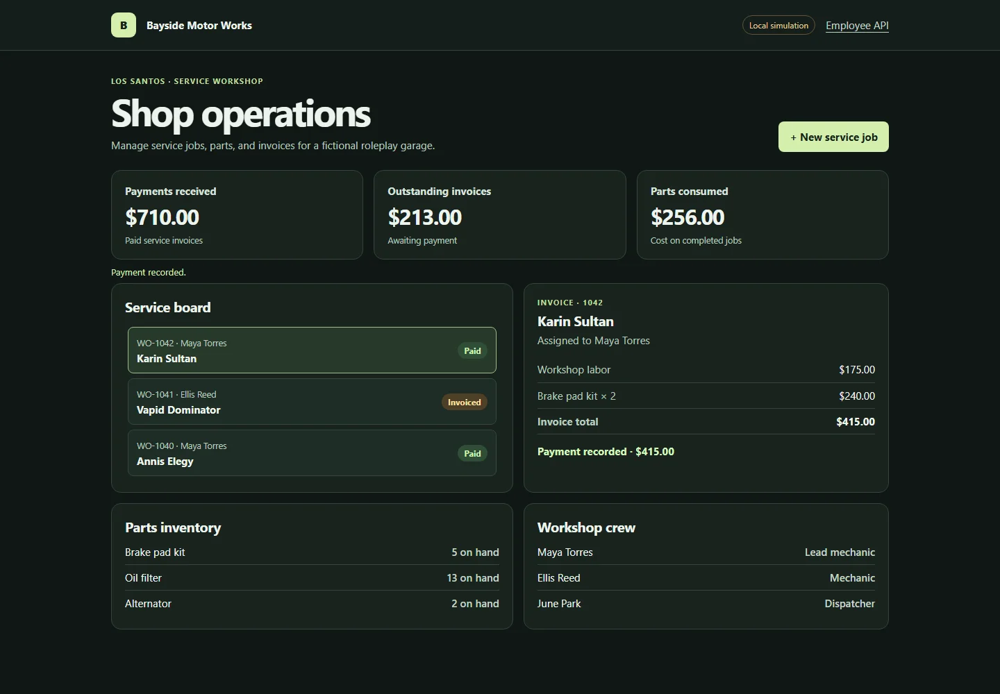
Web application
Move a fictional repair job through stock consumption, invoicing and payment.
React · TypeScript · Web Locks

Web application
Explore manager, mechanic and customer views of a performance-car workshop.
React · Vite · Browser Storage

Web application
Resolve workplace support requests with validation, durable notes and stale-edit recovery.
Node.js · SQLite · JavaScript
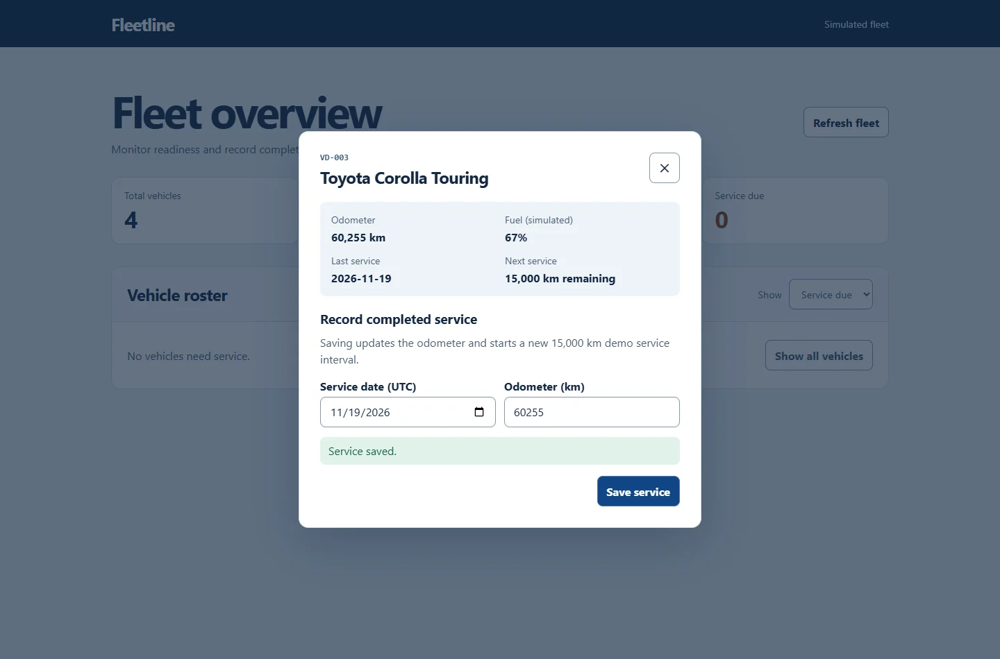
Web application
Review a fictional fleet and record maintenance with date, distance and version validation.
Java · Spring Boot · JPA

Web application
Follow a live simulated E36 drive cycle with streamed instruments, theme controls and connection recovery.
React · TypeScript · FastAPI

CLI tool
Clean UTF-8 contact rows and report duplicate IDs and invalid records.
Python · Standard Library

CLI tool
Export relative file paths and byte sizes as sorted JSON or CSV.
Python · Standard Library

CLI tool
Summarize log severity counts and preserve malformed source line numbers.
Python · Standard Library
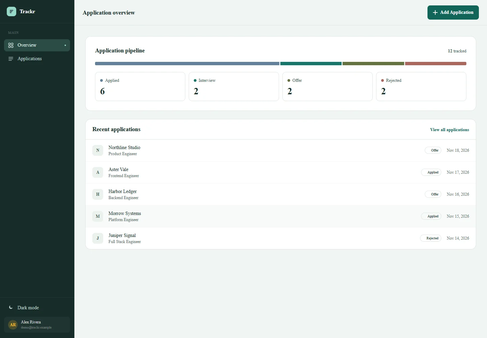
Web application
Track applications from submission to interview and offer, with authenticated editing and focused filters.
Next.js · TypeScript · NextAuth

Web application
Reconcile revenue, refunds and conversion, then explore shipping markets and daily trends backed by SQL.
PostgreSQL · SQL · Node.js

Web application
Post a transfer once, retry it safely, reject an overdraft and inspect an audited reversal.
PostgreSQL · SQL · Node.js

Web application
Three related prototypes explore controls, telemetry and a digital instrument cluster using simulated inputs.
React · TypeScript · JavaScript
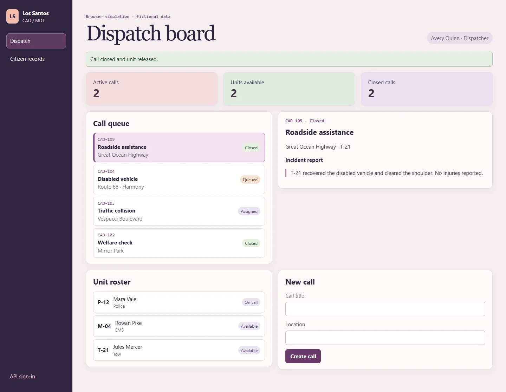
Web application
Create a fictional dispatch call, assign a unit, close an incident and search citizen records.
React · TypeScript · ASP.NET Core
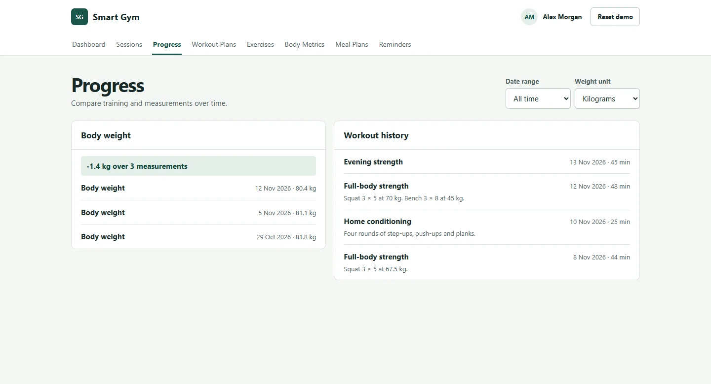
Web application
Log workouts and body measurements, then review dated training progress and weight trends.
React · TypeScript · ASP.NET Core

Web application
Owner-scoped build budgets with planned, actual and projected costs across independent scenarios.
React · TypeScript · ASP.NET Core

Web application
A procedural 3D concept car with visible customization, indicative pricing and a build-summary dialog.
React · JavaScript · Three.js
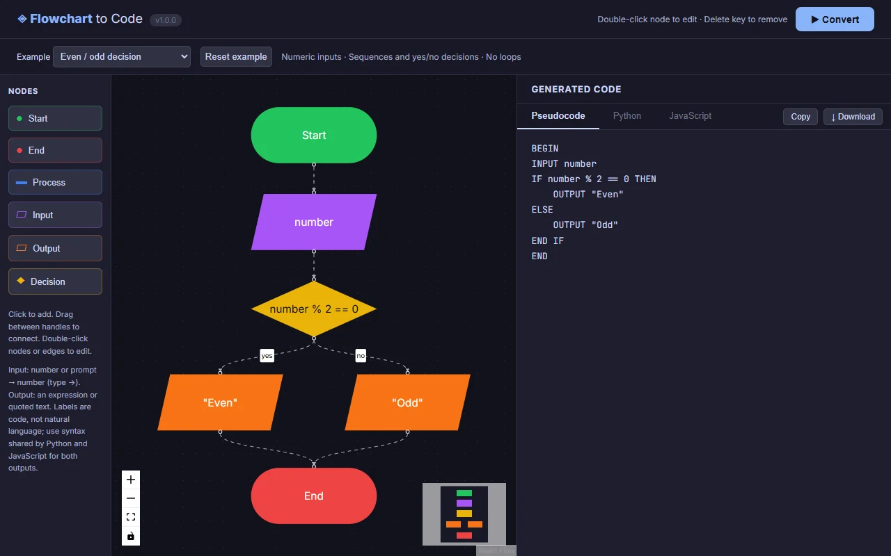
Web application
A visual editor that validates structured graphs and generates pseudocode, Python and JavaScript.
React · TypeScript · React Flow

Web application
A vehicle catalogue and stored telemetry reference app with two persistence models.
Angular · TypeScript · Java 21

Web application
Course-scoped teacher access and attendance recording in a Laravel application.
Laravel · PHP · Blade

Web application
Connected restaurant customer and operations experiences sharing bookings, menus and orders in one browser.
Angular · TypeScript · SCSS

Web application
A TypeScript language pipeline with lexical environments, recursion, closures and a bounded browser playground.
TypeScript · Lexer · Parser

Web application
A task manager with browser-local storage or an optional file-backed Express API.
React · Express · Tailwind CSS

Web application
Track a defect from its initial report through reproduction attempts and proposed fixes.
React · TypeScript · Express
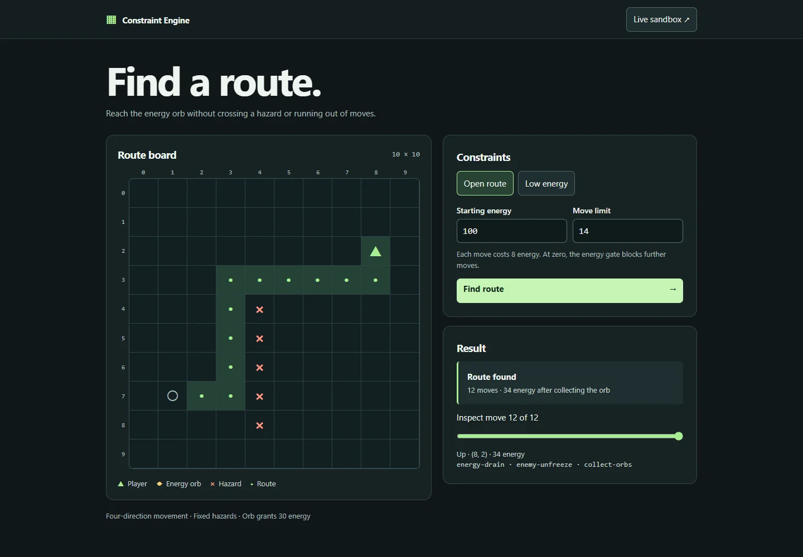
Web application
Find a valid route through a grid and inspect the rules that fired after each move.
TypeScript · Vite · Vitest
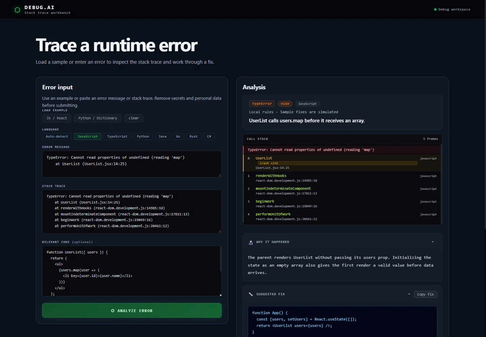
Web application
Inspect a runtime error, trace the stack, and review a proposed fix.
TypeScript · React · Express

Web application
Control a simulated home, switch between rooms, and activate scenes.
React · TypeScript · ASP.NET Core
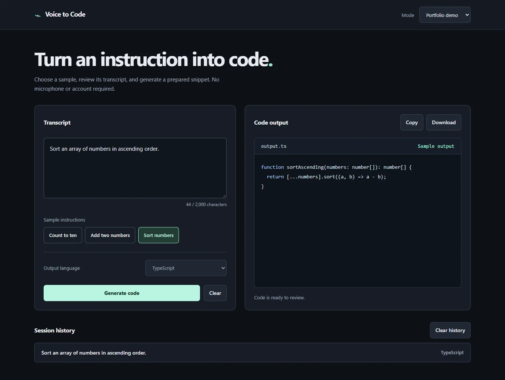
Web application
Turn a typed or spoken instruction into a code snippet you can review and export.
JavaScript · Vite · Web Speech API
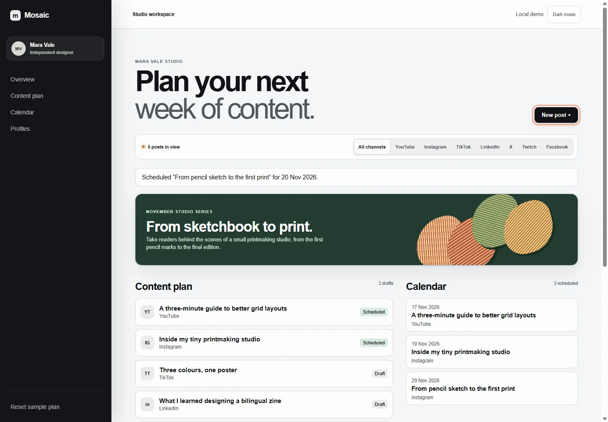
Web application
Plan creator content across channels with drafts, a calendar and browser-saved edits.
Next.js · React · TypeScript
Android app
Track personal transactions, category budgets and recurring templates in a local ledger.
Kotlin · Android
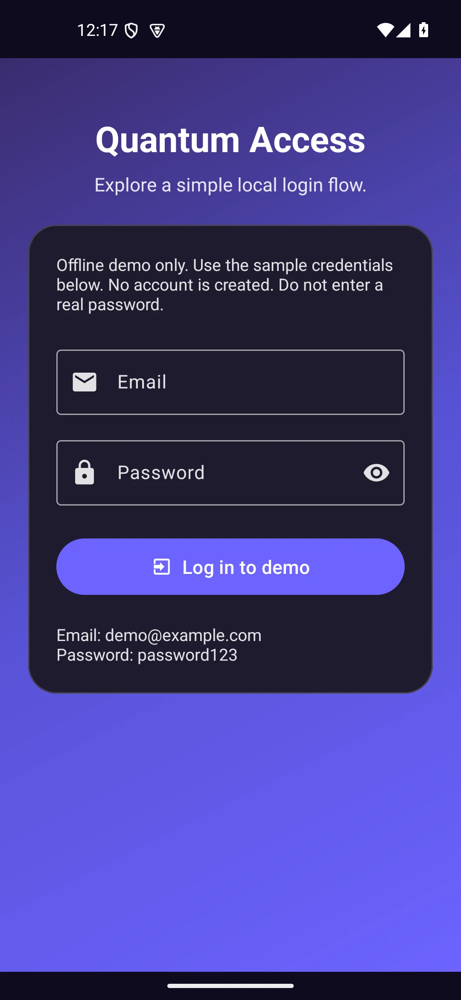
Android app
Explore an offline login, profile and logout flow using sample credentials.
Kotlin · Android
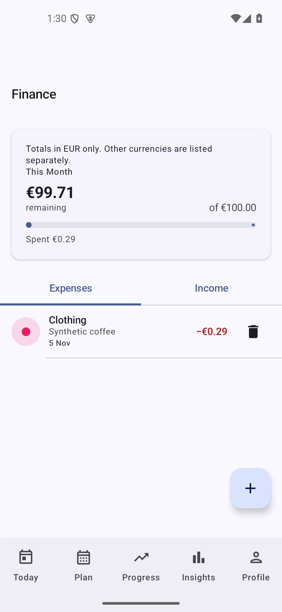
Android app
Set up a personal profile and track monthly expenses by currency.
Kotlin · Android
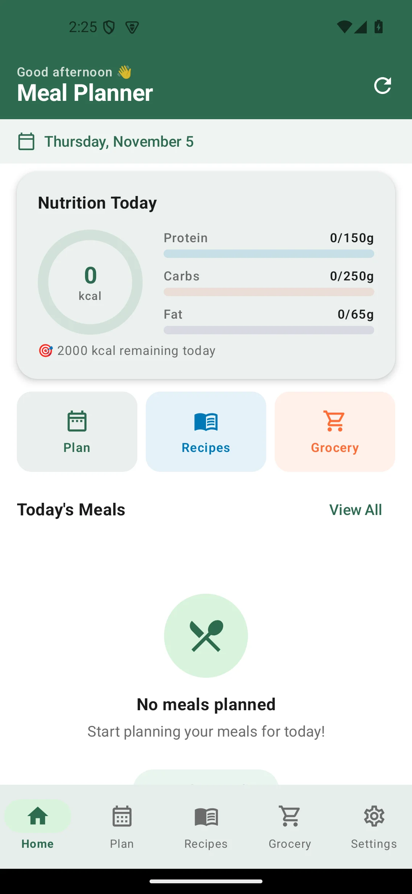
Android app
Manage recipes, plan a week of meals and build a grocery list.
Kotlin · Android

Android app
Follow a training calendar, log completed exercises and earn badges.
Kotlin · Android
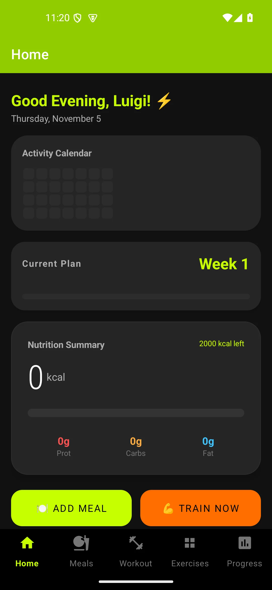
Android app
Log hydration, meals and weight, and follow timed workouts.
Kotlin · Android
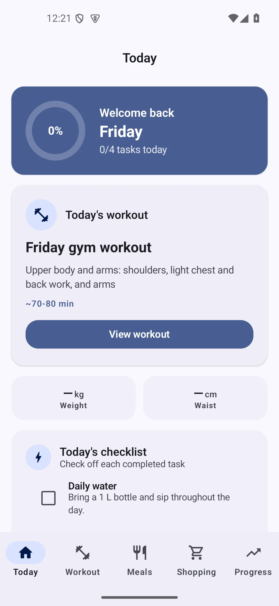
Android app
Follow a fixed weekly plan with daily tasks, workout cards, meals and groceries.
Kotlin · Android
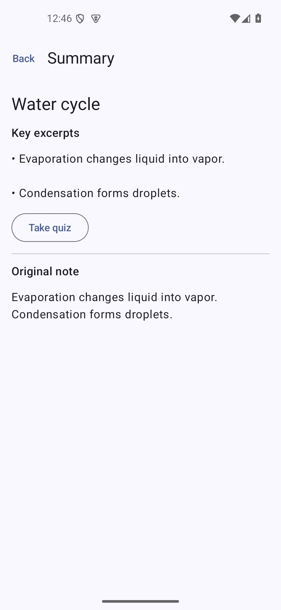
Android app
Turn notes into short excerpts and recall quizzes, then review answer counts by note.
Kotlin · Android
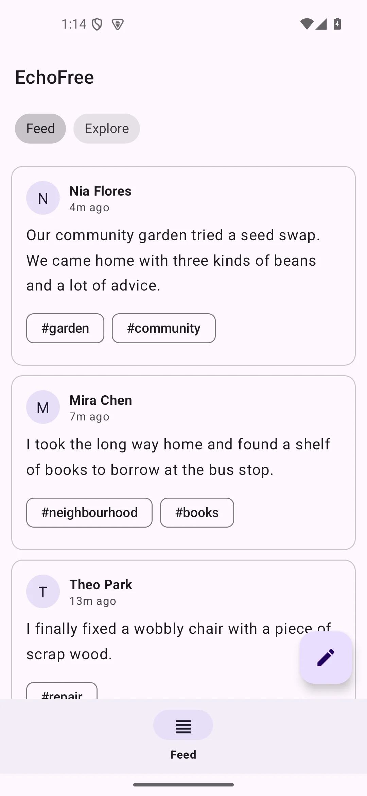
Android app
Browse a text-first feed, discover posts in shuffled order and compose short posts.
Kotlin · Android
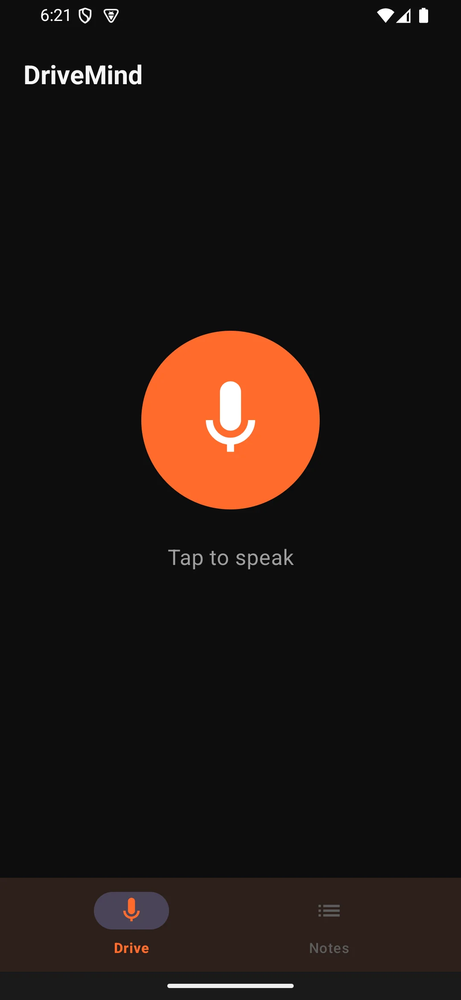
Android app
Capture short notes and organize them into tasks, reminders and ideas.
Kotlin · Android

Android app
Inspect clothing references, track inventory entries and exits, and review stock history.
Kotlin · Android
Try another name or technology.